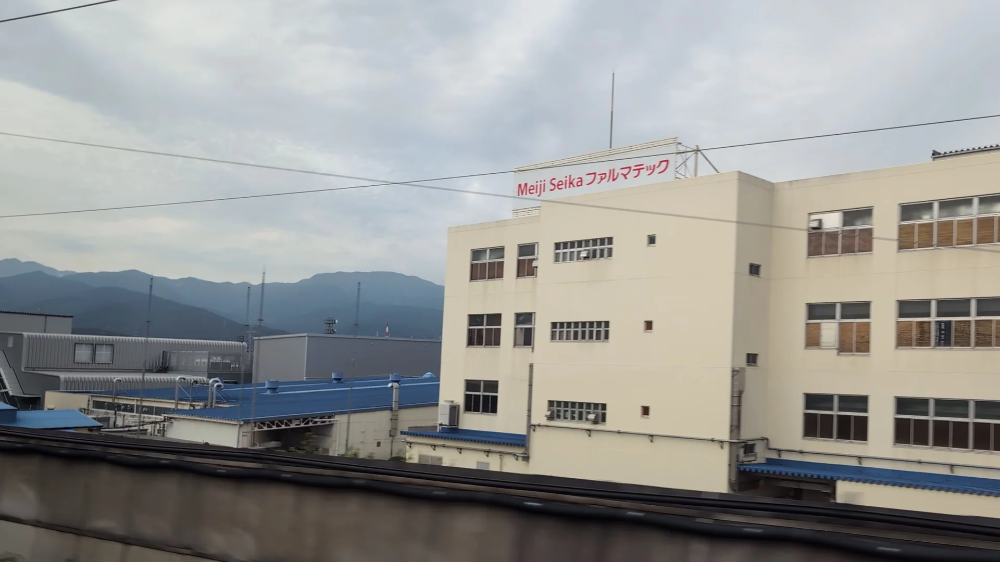
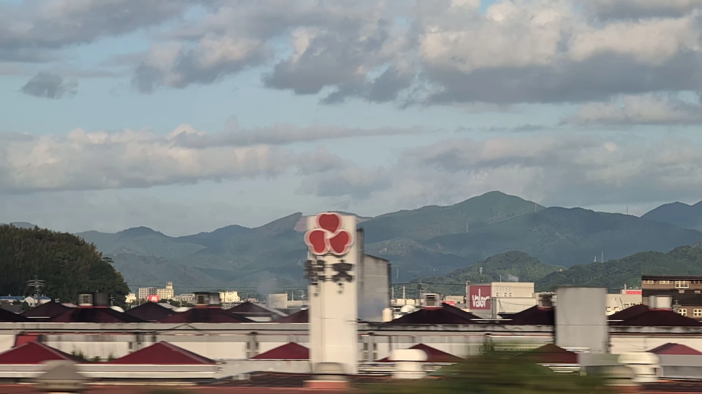

写真で探す
東海道新幹線の車窓から見える工場を、写真とA席・E席の案内で探す。富士のコーヒーから袋井の化粧品、山崎のウイスキーまで。
新横浜 → 小田原
小田原・鴨宮

E席側進行方向の右 MeijiSeikaファルマテック
屋上の赤い社名を探す
小田原の鴨宮にある医薬品の工場です。酒匂川のすぐ東で、クリーム色の建物の屋上に赤い社名が見えます。ここでは錠剤や注射剤を製造しています。
三島 → 新富士
富士のふもと

E席側進行方向の右 UCC富士工場
コーヒーの塔と富士山
白い塔の「UCC COFFEE FUJI」を探そう。レギュラーコーヒーをつくる工場の向こうに、富士山が重なる。

E席側進行方向の右 日本製紙富士工場・富士地区
富士山の足元で、暮らしの紙
紅白の煙突と富士山が目印。敷地内のクレシア春日・新富士工場では、トイレットロールなどの家庭紙をつくる。

E席側進行方向の右 興亜工業本社工場
夜だけ出会える、虹の煙突
段ボール原紙などをつくる工場。写真の「虹煙」は2026年11月11〜23日の限定演出で、いつも見られる景色ではない。
静岡 → 掛川
焼津・大井川

A席側進行方向の左 サッポロビール静岡工場
静岡の一杯は、焼津から
ずらりと並ぶ銀色のタンクと星のマーク。静岡限定のビール「静岡麦酒」も、この焼津の工場から。

E席側進行方向の右 紀文食品静岡工場
かまぼこの袋にある「＋S」
赤い屋根が連なり、その上に紀文のマークが顔を出す。かまぼこやちくわをつくる工場で、商品の製造所記号「＋S」がこの場所を指す。
大井川の鉄橋のそば。反対の窓には味の素の建物。

E席側進行方向の右 ネスレ日本島田工場
川の向こうに、コーヒーの文字
広い河原が開けたら、山のふもとへ。島田工場はコーヒーをつくり、抽出したあとのコーヒーかすをボイラーの燃料にも使う。
大井川の鉄橋から上流へ。工場は線路から約1.3km。

A席側進行方向の左 味の素食品・味の素ベーカリー
おかゆと、焼く前のパン
丸く張り出す白壁に「Knorr」の文字。同じ住所に、おかゆをつくる味の素食品の静岡工場と、冷凍パン生地をつくる味の素ベーカリーの島田事業所がある。
大井川の鉄橋付近。紀文の赤い塔とは線路を挟んで反対側。
掛川 → 浜松
掛川・袋井・浜松

A席側進行方向の左 資生堂掛川工場
白い大屋根の化粧品工場
線路沿いに伸びる白い大屋根。メーキャップ製品をつくる工場で、屋根は出荷時の製品を風雨や日差しから守る。

A席側進行方向の左 丸大食品静岡工場
袋の「＋P」は、掛川の印
並木の上に赤い丸大食品のマーク、その下に丸窓が並ぶ。ここで製造したロングウインナーを同社が2023年に紹介している。袋の製造所記号は「＋P」。
掛川駅から浜松寄り約4km。下りでは資生堂の先。

A席側進行方向の左 ポーラ化成工業袋井工場
ガラスに映る、自分の列車
化粧品をつくる工場の、長いガラス面に注目。光の具合が合えば、いま乗っている新幹線が映る。

A席側進行方向の左 大塚製薬袋井工場
青い壁が、ポカリの目印
緑の芝生に、大きな青い「POCARI SWEAT」。ポカリスエットなどの飲料をつくる工場が、一目でわかる。


E席側進行方向の右 ユニ・チャームプロダクツ静岡工場
工場の庭にも、あのマーク
白い壁を走る黄と橙の波を追うと、庭にも大きなマークが現れる。ここでつくるのは、赤ちゃんや大人用の紙おむつ、生理用品、清掃用シートなど。
掛川駅から浜松寄り約4km。下りでは日東工業の先。

E席側進行方向の右 ハウス食品静岡工場
カレーも、おやつも。
「ハウス食品」の塔を探そう。バーモントカレーや北海道シチュー、とんがりコーンをつくる袋井の工場。

E席側進行方向の右 ヤマハ発動機袋井南工場
線路のそばから、世界の海へ
赤いYAMAHAの文字と白い縦格子。ここでつくるのは、船の後ろに取り付けるエンジン「船外機」。

浜松 → 豊橋
高塚・浜名湖・豊橋

A席側進行方向の左 スズキ本社（高塚）
家並みの上に、赤いS
住宅の屋根越しに、車で見慣れた赤いSが顔を出す。ここはスズキの本社。かつて高塚でつくっていたオートバイのエンジンは、2018年に浜松市の都田へ生産が移った。
浜松駅と浜名湖の間、JR高塚駅付近。下りは浜名湖を渡る前、上りは渡ったあと。

A席側進行方向の左 シンフォニアテクノロジー豊橋製作所
半導体をそっと運ぶ装置
芝生の向こう、横長の壁に「豊橋製作所」「創業1917年」。スマホなどの半導体をつくる工程で、薄いシリコンの板を清潔に運ぶ装置の主力工場だ。
豊橋市三弥町、二川駅の東京寄り。下りは豊橋到着前、上りは豊橋を出たあと。
名古屋の看板も見る

三河安城 → 名古屋
安城

E席側進行方向の右 山崎製パン安城工場
朝のパンは、線路のそばから
太陽のマークと赤い「ヤマザキ」がすぐそばに。パンや和洋菓子をつくる工場が、三河安城の近くにある。

E席側進行方向の右 ニチバン安城工場
おなじみの看板、変わる仕事
赤・白・青の「セロテープ」が目印。粘着テープの工場は、医療を支える製品にも役割を広げている。
出典
2026年の設備情報は医療補助用・紙・プラスチックの粘着テープ類。2025年の公式説明ではセロテープ関連の生産を埼玉へ集約しており、看板だけで安城の現在の製造品とは判断していません。
名古屋 → 岐阜羽島
清須

E席側進行方向の右 キリンビール名古屋工場
タンクが巨大なビールに見える
銀と金に塗り分けられたタンクがずらり。一番搾りをつくる清須の工場を、名古屋の先で見つけよう。
米原 → 京都
米原・彦根・近江

A席側進行方向の左 ヤンマー中央研究所
米原を出ると、大きな時計
横長の建物に赤い「YANMAR」と大きな時計。米原にあるのは中央研究所で、エンジンの燃費をよくする技術や代替エネルギーを研究している。
下りは米原発すぐ。こだまで約1分の観察例。上りは米原到着前。

E席側進行方向の右 フジテックビッグウィング
いつもの上り下りをつくる場所
高い塔はエレベータの研究塔。同じ敷地に標準型・オーダー型をつくる工場があり、研究と生産を担う。

A席側進行方向の左 ジョイソン愛知川製造所
白い正面にJOYSONの文字
愛知川の近くで、ガラス張りの玄関の上に「JOYSON」の文字が見えます。ここでは自動車部品やチャイルドシートを開発・製造しています。

A席側進行方向の左 ロッテ滋賀工場
お菓子の大看板が並ぶ
大きなお菓子とアイスの看板が並ぶ。雪見だいふく、クーリッシュ、トッポなどをつくる工場。看板の全商品をここでつくるわけではない。

A席側進行方向の左 クオリテックファーマ滋賀工場
線路際の壁に青い社名
野洲川の近くで、淡い色の壁いっぱいに青いカタカナが見えます。野洲市三上のこの工場は、製薬会社などから委託を受けて医薬品を製造しています。

A席側進行方向の左 日清食品滋賀工場
カップライスも、ここから
栗東で「日清食品」の建物を探そう。カレーメシなどのカップライスも生産。反対のE席側にある関西工場とは別の工場。
京都 → 新大阪
山崎

E席側進行方向の右 サントリー山崎蒸溜所
山すそに、ウイスキーの故郷
住宅の屋根と電線の向こうに「山崎」の文字。シングルモルト山崎に使うモルト原酒を、この蒸溜所でつくる。
席の表記・掲載順について
A・Eは普通車の3＋2列座席での表記です。下り（新大阪方面）は左がA席側、右がE席側。上り（東京方面）はその逆です。グリーン車では、普通車のE席側にあたる窓がD席になります。
出典・写真について
工場の役割・製造品は各項目の企業公式情報などで確認しました（2026年11月）。看板で見える商品と実際の製造品を個別に確かめています。高塚のスズキ本社と米原のヤンマー中央研究所も紹介しています。写真は駅間ごとにまとめました。区間内の順番や列車の速さ、光の向きで見え方は変わります。距離は公表された施設の位置と路線から求めた概算です。
車窓写真の撮影はmichikusa。POLAの写真に写る車両の装飾は© Disney。